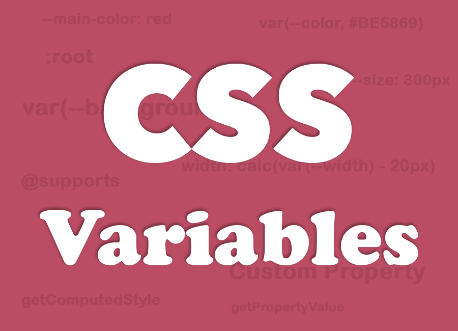
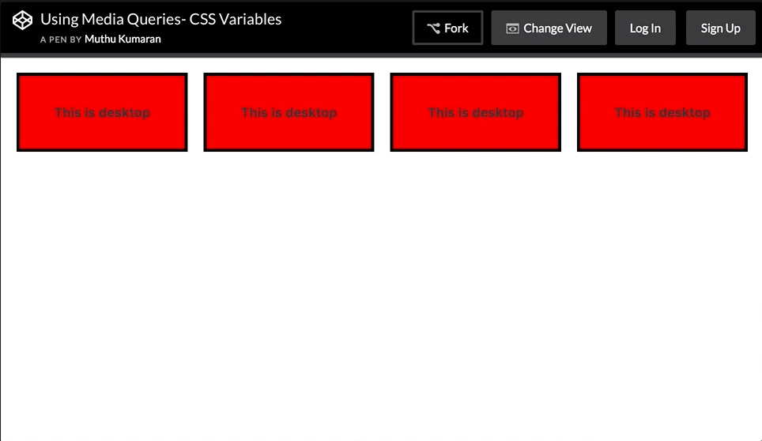
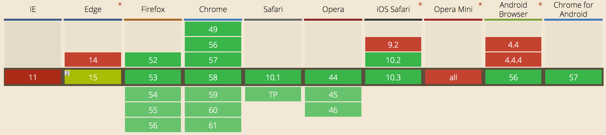

By Muthu Kumaran - June 5, 2017
By Muthu Kumaran - June 5, 2017
CSS variables not to be confused with SASS or LESS variable.
Variable is the one of main reason CSS Preprocessor like SASS or LESS exist at all. Look at this simple SCSS example,
See the Pen CSS Variables by Muthu Kumaran (@mkumaran) on CodePen.
The above code would do nothing in a browser. The browser wouldn't understand the declarations and toss them out. Preprocessors need to compile into CSS to be used. This code would compile to:
div{
border: 1px solid red;
color: red;
}
See the Pen rwNQqW by Muthu Kumaran (@mkumaran) on CodePen.
This is now valid CSS. The variable was part of the preprocessor language, not CSS itself. Once the code compiles, the variables are gone.
Now CSS started supporting CSS variables and allows you to work with variables directly in the CSS. No compiling requires.
CSS Variables are entities defined by CSS authors which contain specific values to be reused throughout a document. It is a custom property which starts with -- (double dash) and are accessed using the var() function.
See the Pen MmNpbX by Muthu Kumaran (@mkumaran) on CodePen.
--) ?
So that it will be compatible with current CSS Parsers which accepts CSS properties only letters and dashes (eg: line-height, -moz-box-sizing). Also you can use CSS variables in the CSS preprocessor without any conflict.
CSS variables follows the same cascade rule. You can define this same property at different levels to reset value of the variable. For example,
See the Pen JJjzZy by Muthu Kumaran (@mkumaran) on CodePen.
You can see there is only one 'color' property in * selector. <h3> and <div> colors updated by changing only the variable.
CSS variable can also be defined in element's inline styles. Suppose, you have a component where you can control the size,
See the Pen Inline Style - CSS Variables by Muthu Kumaran (@mkumaran) on CodePen.
var() functionNow you know the use of var() function. There is more about this function to know.
Look at this code below, there is a red div and a green child div. Only one CSS variable used for the child green div.
See the Pen awbMqJ by Muthu Kumaran (@mkumaran) on CodePen.
Now go ahead and remove the CSS variable "--background: green;" from :root selector and see what happens.
You may guess the child element will have background red inherited from parent element. No, that's not the case here. When there is no variable defined, when you use that variable in any CSS property, it will take the initial value by default. Here in this example, background color will be "transparent"
See the Pen BZabPb by Muthu Kumaran (@mkumaran) on CodePen.
If CSS Variable has a invalid values like --background: blah blah blah; or typos like --background: yelow; /* a accidental typos for yellow */ then again CSS property will take the initial value by default like,
background is transparentwidth is autoposition is staticopacity is 1display is inlineIn this case, background color will be "transparent"
See the Pen NgWmgN by Muthu Kumaran (@mkumaran) on CodePen.
Sometimes there are cases where CSS variables might not be defined. In that case, you can set a fallback value as a second argument in the var() function
background: var(--background, green);
See the Pen wevZOo by Muthu Kumaran (@mkumaran) on CodePen.
Also you can do this background: var(--color1, var(--color2, var(--color3, #00BCD4)));
calc()If you've never worked with it before, the calc() function is a handly little tool that lets you perform calculations to determine CSS values. It’s supported on all modern browsers, and can be combined with CSS Variable to build up new values. For example, <div> width is calculated dynamically,
See the Pen calc() - CSS Variables by Muthu Kumaran (@mkumaran) on CodePen.
@media queriesYou could even re-set variables within media queries and have those new values cascade through everywhere using them, something that just isn't possible with preprocessor variables.
Check out this example where a media query changes the variables which are used to set up a very simple grid,
See the Pen Using Media Queries- CSS Variables by Muthu Kumaran (@mkumaran) on CodePen.
Open the above codepen in a new tab and try resizing the browser.

Accessing CSS variables from JavaScript is pretty easy via getComputedStyle, setProperty and getPropertyValue.
To get variable use getPropertyValue(),
/* to get varaible from :root */
document.documentElement.style.getPropertyValue('--background');
/* to get variable from element */
document.querySelector('.block-3').style.getPropertyValue('--background');
To update the variable values, use setProperty()
/* to change varaible value from :root */
document.documentElement.style.setProperty('--background', '#ff0000');
/* to change varaible value from element */
document.querySelector('.block-3').style.setProperty('--background', '#ff0000');
You can also use getComputedStyle() to get/set CSS property values
// using "getComputedStyle()"
var styles = getComputedStyle(document.documentElement);
var styles = getComputedStyle(document.querySelector('.block-3'));
// Get variable
var bg_color = styles.getPropertyValue('--background');
// Set or Update variable
styles.setProperty('--background', '#8DC26F');
See the Pen WObrwv by Muthu Kumaran (@mkumaran) on CodePen.
CSS Variables are case sensitive.
--color != --COLOR
lower case --color is different from uppercase --COLOR
/* Invalid */
--color:;
/* Valid */
--color: ; /* space is assigned */
/* Invalid - CSS doesn't support concatenation*/
.logo{
--logo-url: 'logo';
background: url('assets/img/' var(--logo-url) '.png');
}
/* Invalid - CSS bug */
.logo{
--logo-url: 'assets/img/logo.png';
background: url(var(--logo-url));
}
/* Valid */
.logo{
--logo-url: url('assets/img/logo.png');
background: var(--logo-url);
}
/* Invalid */
--width: 10;
width: var(--width)px;
/* Valid */
--width: 10px;
width: var(--width);
/* Valid */
--width: 10;
width: calc(1px * var(--width)); /* multiply by 1 unit to convert */
width: calc(1em * var(--width));
CSS Variables will not work on all IE browsers and only supports partially on Edge 15. There are some polyfill available for non supported browsers.

Have a fallback property if browser does not support CSS Variables then fallback will take over.
:root{
--bg-color: red;
}
div{
background: red; /* fallback for non-supported browser */
background: var(--bg-color);
}
@supports
@supports is a feature detection in CSS. We can use @supports to detect browser support for CSS Variable.
Basic Usage
See the Pen @supports - CSS Variables by Muthu Kumaran (@mkumaran) on CodePen.
You can also use not in @support to target only "Not Supported Browsers"
See the Pen @supports - CSS Variables by Muthu Kumaran (@mkumaran) on CodePen.
Also you can use CSS.supports(), it's a CSS feature detection in JavaScript. Learn more at MDN
@supports and CSS.supports() are supported on all modern browsers including Edge except IE.
If you like this, please share
Comments
Thank you for visiting my page. Please shares your views and suggestion in the comment box below.